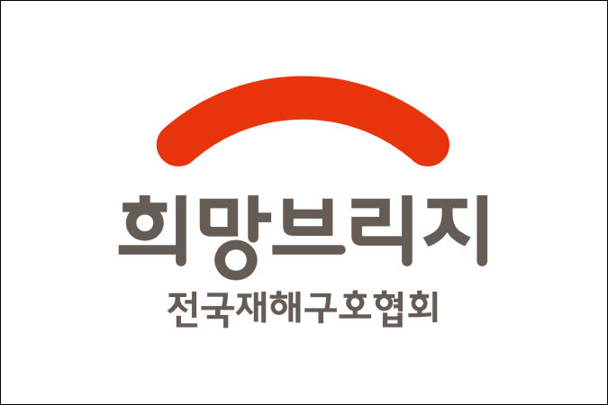
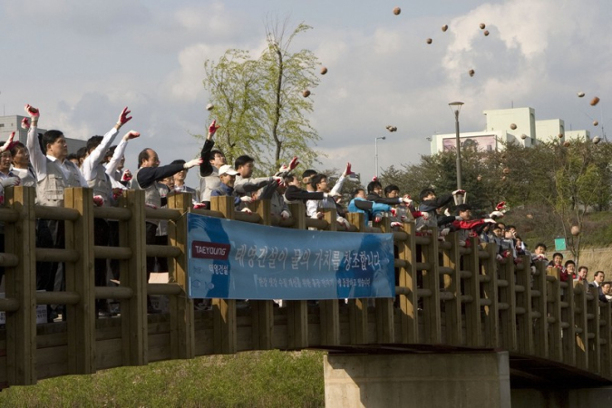
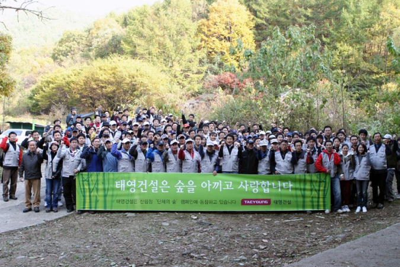
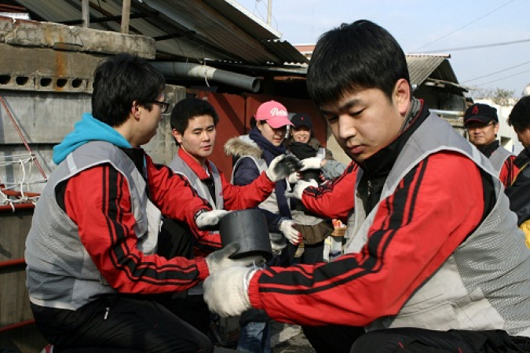

사회공헌원칙
태영건설의 사회공헌 활동은
‘LIFE VALUE CREATOR’라는
기업 가치에 맞게 존경받는 기업으로서 사회적 책임을 실천하고
있습니다.
활동분야
-

희망브리지 전국재해구호협회 모금
- 2023년 강릉 산불 피해 성금 3억원
- 2020년 수해이웃돕기 성금 5억원
- 2020년 코로나19 성금 5억원
- 2019년 강원도 산불 이재민 성금 5억원
- 2017년 포항 지진 성금 2억원
- 2016년 경주 지진 성금 1억원
-

여의도 샛강 ‘미생물 흙공’ 던지기
유산균, 효모 등 유익한 미생물을 조합해 발효시킨 EM 원액과
쌀뜨물 발효액 등을 섞은 물에 황토를 섞어 반죽해 만든 흙공을
샛강에 2,000개 투척하여 악취제거, 수질정화 등의 효과를
볼 수 있습니다. -

‘숲 가꾸기’사회공헌활동
용인시 금어리 일대의 ‘숲 가꾸기’ 봉사활동을 진행하였습니다.
산림청과의 협약을 통해, 숲 정돈(잡목제거, 가지치기,
비료주기, 월동준비) 봄,가을 관리하고 있습니다. -

사랑의 연탄 나눔
충주시 교원동 내 저소득 가구에게 연탄 나눔을 실시하였습니다.
기업의 사회적 책임의 실천을 위한 사회공헌활동 입니다.